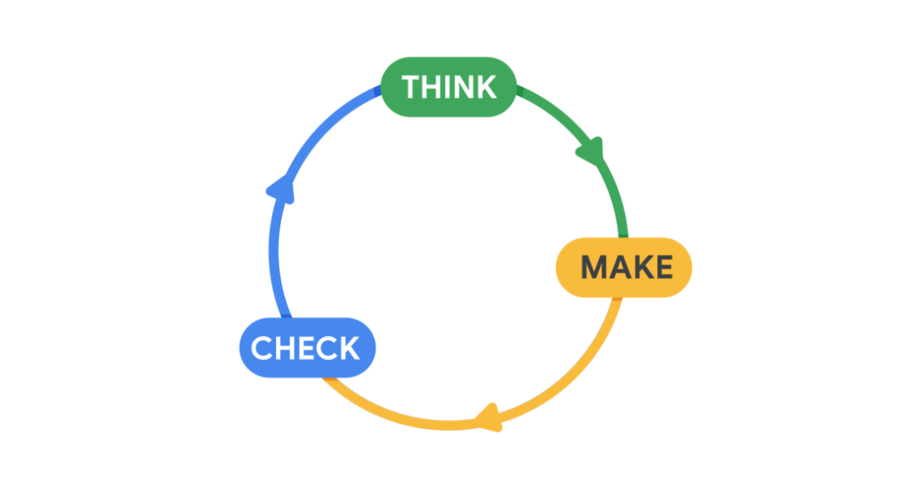
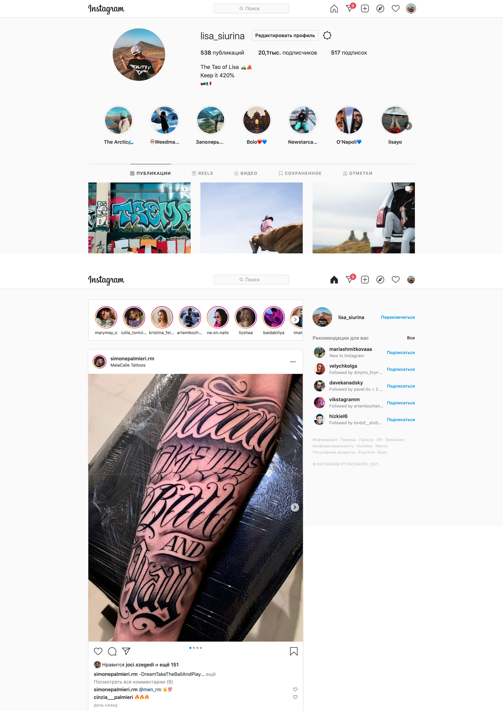
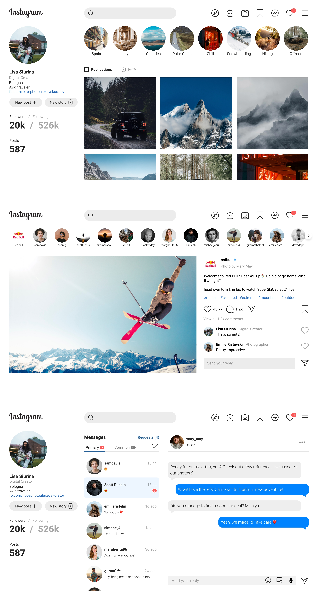

About the Project
This Instagram Desktop Redesign concept was triggered by the fact that current Instagram desktop version has inconsistent look and limited functionality, which does not play into the hands of the Instagram desktop experience. Since Instagram has changed a lot in its functionality from a photo sharing app to a messenger and driving e-commerce force, it makes people use desktop version even more. Thus, It is important to provide users with better experience.
The challenge
How might I create a better user interface that will provide a faster experience?
My Role:
- UX/UI Design
The Design Process: Lean UX
The Lean UX process focuses on reducing time and resources, and producing a workable product as soon as possible.
The Lean UX process can be divided into three steps:
- Think. Explore the problems that users are experiencing and consider how you could solve them with your design.
- Make. Start redesigning the product by creating sketches, wireframes, and prototypes.
- Check. Gather feedback and make adjustments to designs accordingly.
1. Think
1.1 Pain points
Let me go straight to some vivid pain points I discovered while experiencing the desktop version.
First, limited functionality compared to mobile version. For example, it is not possible to post reels from a desktop device which is rather inconvenient, giving the fact that most photographers edit video content on a laptop or a computer. Thus, it would be logically to make it possible to post reels directly from your desktop device.
What is more, Instagram is a source of inspiration with a plenty of content to scroll through, which makes it necessary to save posts so that not to access them easy. However, 'saved' posts are not easy to find.
Second, Inconsistent look. The desktop version seems to copy a mobile version experience, without considering desktop size. The desktop insta is weirdly centered, leaving free spaces on the sides of the page.
Summarizing pain points
- Small icons
- Inconsistent look: Unneccassy free space, no harmony
- Impossible to post reels from a computer/laptop
- Saved posts are not at-hand
2. Make
2.1 Dealing with pain points
In order to cope with paint points I decided to incorporate the following solutions:- Bigger icons
- Make it look consistent, by placing the interface elements harmonically on the desktop version.
- Add 'New Reel' button.
- Add 'Saved' icon to the navigation bar and group icons logically
Redesign
3. Check
During this step, I analyzed data obtained from the interviews and synthesized them in order to define the core problems.
Project Takeaways.
This project proved that taking into account all the interactions that a user might have, both online and offline is of key importance as well as brainstorming alternate user paths, making sure that the customer is supported no matter what happens.